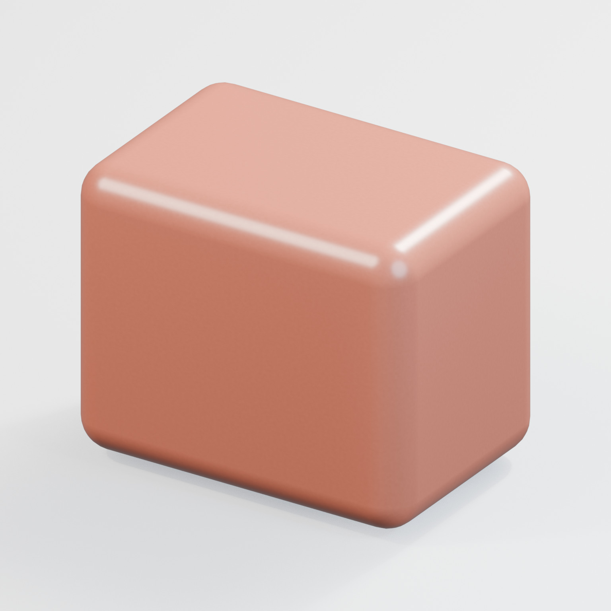
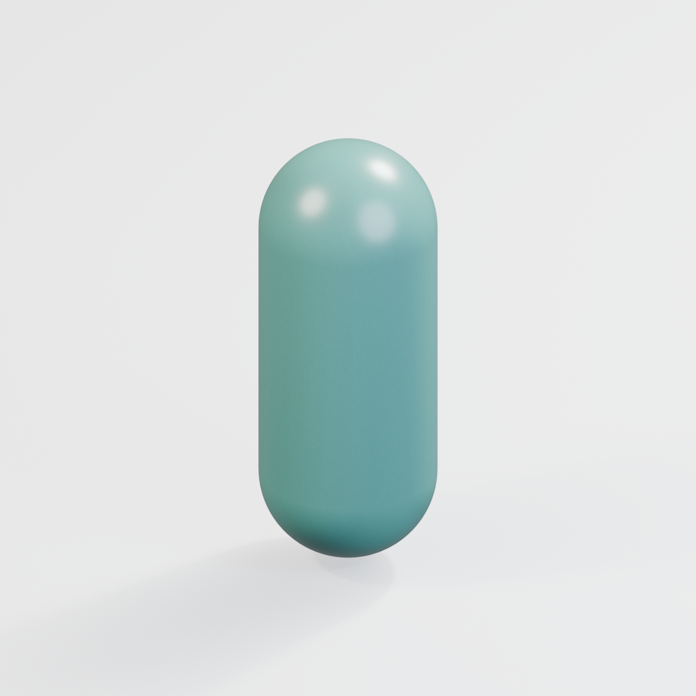
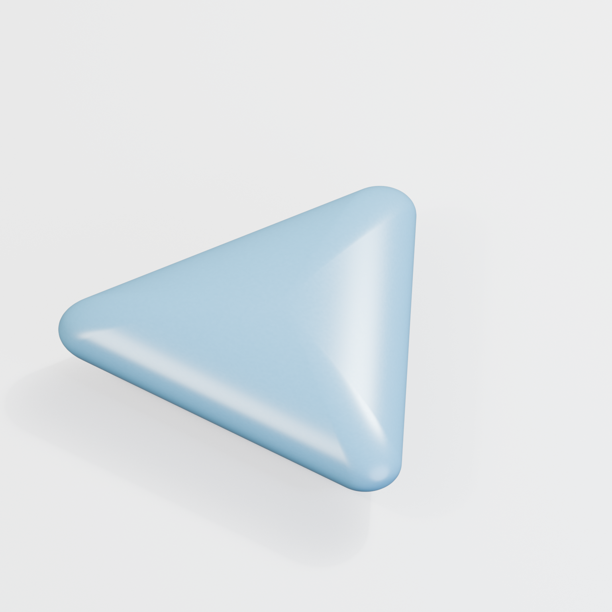
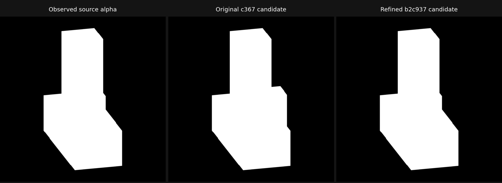

Measure globally
Linear alpha, fixed half-coverage mask, recorded camera and sampling.
3 fitting views / 512²LOCAL REVIEW / 09 OCTOBER 2026
Editable geometry, a focused detail crop, and a final presentation pass. Explore the new local results alongside the limits that remain.
Blender 5.2.2 LTS · Existing toolchain · Publication pending review

01 / THE PRESENTATION PASS
Recorded materials and lighting.
Exact geometry remains unchanged.
Satin ceramic materials, subtle procedural roughness and studio lighting reveal the actual shapes. These display images never enter silhouette or surface measurements.
New detail crop; live radius control.
1536 × 1536 / display only
Authored smooth surface; editable segment.
1536 × 1536 / display only
Rounded corners; asymmetric front/back.
1536 × 1536 / display onlyClick a render to inspect its full resolution. No displacement, geometry smoothing or cosmetic acceptance claim.
02 / TARGETED DETAIL ACQUISITION
Front, side and top are measured at 512 pixels. A residual-selected top region is actually rendered at 1024, then 2048 pixels. Both oblique views remain untouched during fitting and crop selection.
Linear alpha, fixed half-coverage mask, recorded camera and sampling.
3 fitting views / 512²A 160-pixel-cell region of the source geometry supplies new samples.
1 real crop / 1024²Two reserved obliques plus a separate native boundary and radius edit.
Strict gates preserved| Observation | 512 baseline | With detail crop |
|---|---|---|
| Oblique 35° boundary IoU | 0.968154 | 0.975912 |
| Oblique 145° boundary IoU | 0.970762 | 0.978686 |
| Mean held-out alpha L1 | 0.000642503 | 0.000434165 |
| Raw mean surface distance | 0.000253135 | 0.000189280 |
Surface distance is in unchanged world units. Rounded-box surface tolerances remain unqualified.
Reinvesting saved time in one 2048-pixel detail crop improved held-out alpha error a further 11.2% over 1024. Acquisition plus fitting took 1.813 seconds; the complete checkpoint took 7.779 seconds and 684 MB peak RSS. Boundary and raw mean surface distance improved. The final native follow-up passed in 12.497 seconds.
The corrected comparison took 7.122 seconds, eight new renders and 598 MB peak process-tree RSS; five prior source measurements were verified and reused. The new crop took 0.179 seconds and its additional fit 0.075 seconds. The saved-only geometry/edit follow-up took 10.756 seconds. These are costs for one representative case.
The first prototype accidentally used the compiler’s three-segment bevel default. It gained 4.7% in alpha error but failed both boundary gates. That receipt remains retained. The corrected candidate explicitly uses the frozen eight-segment family model.
03 / FROZEN FAMILY COVERAGE
Ten new candidates.
Two retained results reused.
All ten new candidates pass their original 50 silhouette views and separate exact native boundary checks. Each family keeps independent surface and editability verdicts. The vase and triangular dot retain their earlier actual reconstruction evidence.
Matched neutral previews exposed bevel bands. Explicit weighted-normal controls now match the authored box and remove the bands without changing indexed geometry. Flat, sharp and stepped controls retain their intent.
The multipart case passes five silhouettes and its native boundary. One complementary view exposed the excess depth. A one-scalar repair reduced sampled maximum surface error from 0.180 to 0.000502 world units and improved the reserved oblique boundary from 0.8532 to 0.9915. The scalar is locally identified; global hidden-surface uniqueness remains unclaimed.
Wrong depth, filled cavities and missing parts remain negative controls. Their detected failures do not count as failed actual reconstructions, and they never become aggregate passing evidence.

| Independent observation | Original | Refined |
|---|---|---|
| New-view boundary IoU | 0.787341 · failed | 0.994247 · passed |
| Reserved oblique boundary | 0.853192 | 0.991509 |
| Raw mean distance, world | 0.004201645 | 0.000161978 |
| Sampled max distance, world | 0.180239215 | 0.000502135 |
One scalar, 22 residual calls / 0.152 seconds. All five original gates, the new controlled view, exact boundary and short-depth edit/restore pass. Independent family surface limits remain unavailable.
04 / EXPLICIT REMAINING WORK